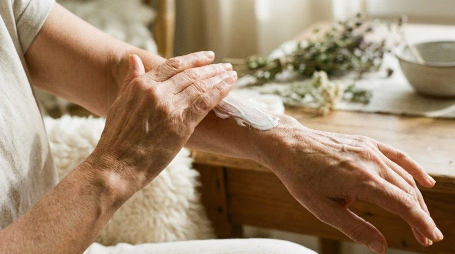

MATURE BRIDE
ハリを守るほうが、
痩せるより効く。
40代以降の挙式では、体重より肌の状態が写真を決めます。落とす方向に力を入れると、顔と肌から先に減っていきます。

先に結論です。優先順位は、睡眠、保湿、たんぱく質。この3つで肌の状態は変わります。新しい化粧品を試すのは最後で、しかも式の3ヶ月以上前に限ります。
この年代で優先すること
| 項目 | 優先度 | 理由 |
|---|---|---|
| 睡眠 | 最優先 | 肌の回復は寝ている間に起きます |
| 保湿 | 高い | 乾燥は写真で粉として出ます |
| たんぱく質 | 高い | 足りないと肌と髪から落ちます |
| 姿勢 | 高い | 首の長さとデコルテの見え方が変わります |
| 背中と二の腕 | 中 | 施術のほうが早い部位 |
| 体重 | 低い | 落とすほど顔がやつれます |
20代と違うのは回復の速さ
荒れた肌が戻るまでの時間、無理をした後に元に戻るまでの時間。どちらも長くなります。つまり失敗を取り返す余裕が少ないということです。
これは設計の問題として扱えます。取り返せない前提で組めば、そもそも失敗しない方法を選べます。直前に新しいことを試さない、極端な制限をしない。この2つを守るだけで結果が変わります。
やってはいけないこと
- 式の直前に化粧品を変える。合わなかった場合、回復に時間がかかります
- 短期間で体重を落とす。顔と胸から先に落ちます。骨が浮くと疲れて見えます
- 糖質と脂質を両方抜く。肌が乾き、写真で粉を吹きます
- 複数のサプリを同時に始める。何が効いたか分からなくなります
まず状態を知る
何を使うか決める前に、今の肌がどの状態かを把握してください。乾燥しているのか、皮脂が出ているのか。これを取り違えると、選ぶものが逆になります。

いま使うもの
この年代で選ぶ基準は、刺激が少ないことです。成分の種類が多いものほど、どれかが合わない確率が上がります。いま使っていて問題のないものを続けるのが最も安全で、変えるなら3ヶ月以上前に。

肌が荒れている時期の考え方は肌が不安定なときにまとめています。
内側から補う選択
塗るケアで届かない部分を、飲んで補うという考え方があります。ただしどちらも実感までに時間がかかります。挙式まで半年以上ある場合の選択肢として考えてください。直前に始めても間に合いません。
Hazumi バージンプラセンタ
サプリ飲むタイプのエイジングケア。塗るケアで届かない部分を内側から補う考え方のものです。実感までに時間がかかるため、挙式まで余裕がある人向けです。式の直前に始めても間に合いません。
詳細を見る ＞サプリより先に、食事のたんぱく質を確保するほうが効果は確実です。目安はたんぱく質の摂り方に。
食事で守るもの
たんぱく質と脂質。この2つを削ると肌と髪に出ます。体重を落とす過程でここを削ると、数字は動いても写真は悪くなります。

施術で時間を買う
背中と二の腕は自分では見えず、自力で変えるには時間がかかります。期間が限られているなら、費用をかける価値がある部位です。
時期と部位の選び方はブライダルエステに。
次に読む
年代ごとの進め方は40代の花嫁と30代の花嫁、睡眠については睡眠が肌に出る仕組みに。